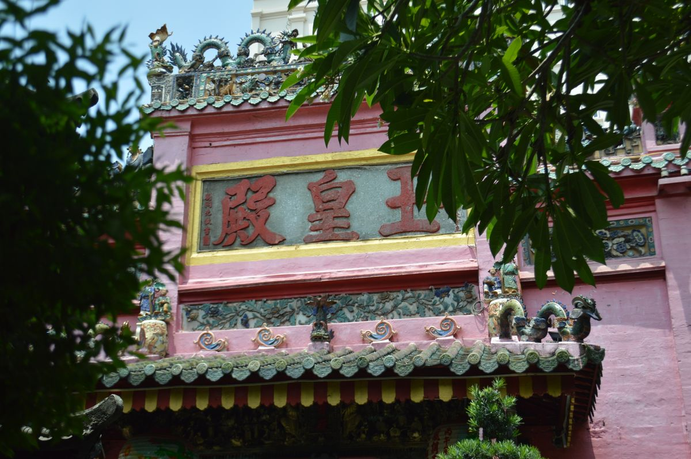
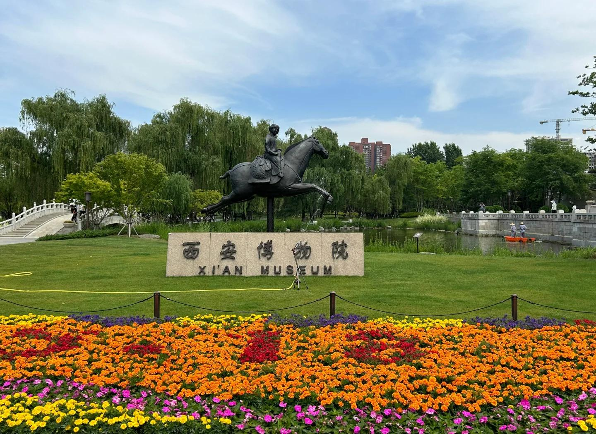
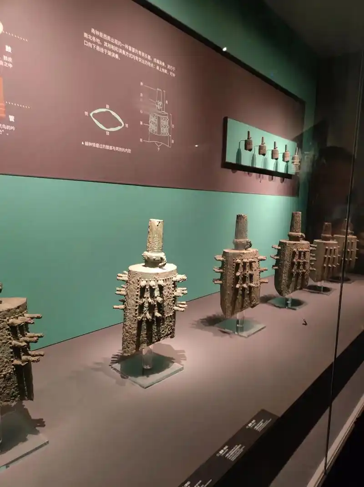
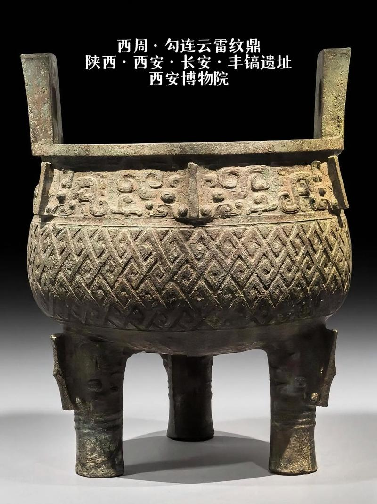
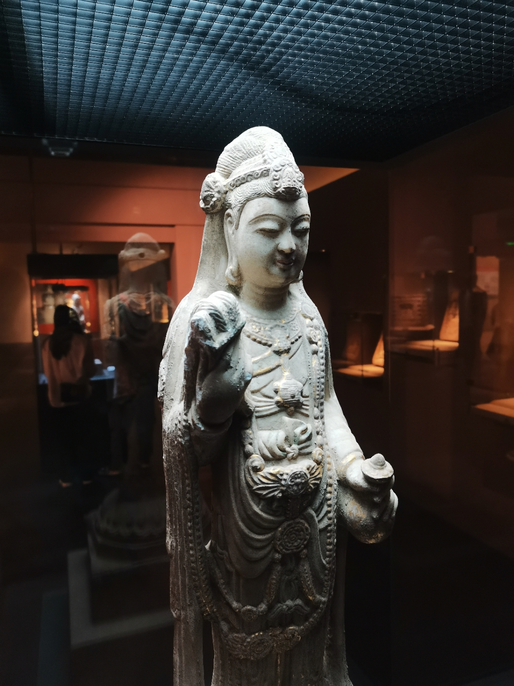
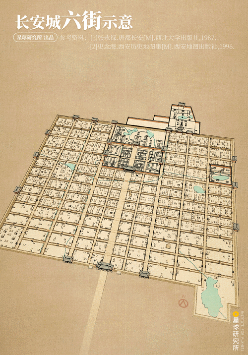

西安博物院位于西安市南门外友谊西路，以唐代小雁塔为核心，集博物馆、古建筑和城市园林于一体，是国内少有的以世界文化遗产为"镇院之宝"的博物馆。2007年建成开放的博物馆主体建筑由张锦秋院士设计，采用"天圆地方"的理念——圆形玻璃穹顶象征天，方形基座象征地，与小雁塔的古朴形成了跨越1300年的建筑对话。
和陕西历史博物馆以"通史陈列"为主线不同，西安博物院更侧重于用"城"的视角讲述古都变迁——从西周丰镐、秦咸阳、汉长安到隋唐长安再到明清西安府，呈现了西安三千多年的建城史。馆内常设展览包括"古都西安——千年帝都"基本陈列，以及佛教造像、玉器、印章、书画等专题展览。

博物院所在之地即是唐代荐福寺遗址。荐福寺始建于唐文明元年（684年），是唐中宗李显为超度其父高宗亡灵而敕建的皇家寺院。寺内的小雁塔建于景龙年间（707—710年），历经1300余年风雨仍巍然矗立。寺内还有金代大钟一口，即"关中八景"之一"雁塔晨钟"的主角。博物院将这座千年古寺完整纳入了展览体系，使文物展示与历史现场融为一体——参观者不仅能看到文物，更能站在文物"原来的位置"感受历史。
西安博物院馆藏文物13万余件，其中三级以上珍贵文物14400余件。特色藏品包括：商周青铜器（如西周"勾连雷纹大鼎"）、汉代陶俑、北朝石刻造像、唐代三彩器、金银器和历代书画。尤为珍贵的是馆藏佛教文物——因荐福寺本身就是唐代皇家寺院，博物院收藏了大量唐代金铜佛像和石刻造像，其中唐代"鎏金观音铜像"精美绝伦。
博物院还收藏了一批"长安舆图"——古代西安的城市地图和建筑图样，包括明代《西安府城图》和清代《长安县志》中的城市舆图等，是了解古代西安城市格局的重要史料。




| 地址 | 西安市碑林区友谊西路72号 |
|---|---|
| 开放时间 | 09:00 — 17:30（16:30停止入馆）；周二闭馆 |
| 门票 | 免费（凭身份证领票）；登小雁塔另需购票 |
| 交通 | 地铁 2 号线南稍门站 A 口出，步行约5分钟 |
| 小贴士 | 陕西历史博物馆经常预约满，西安博物院是绝佳的替代选择，人流较少且同样精彩；清晨在荐福寺园林中散步，体验"雁塔晨钟"的意境 |